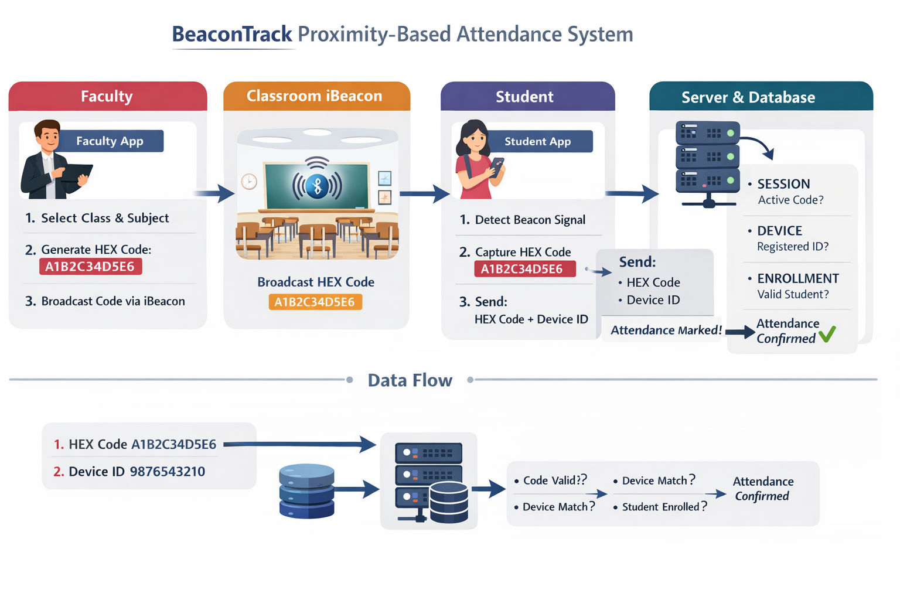
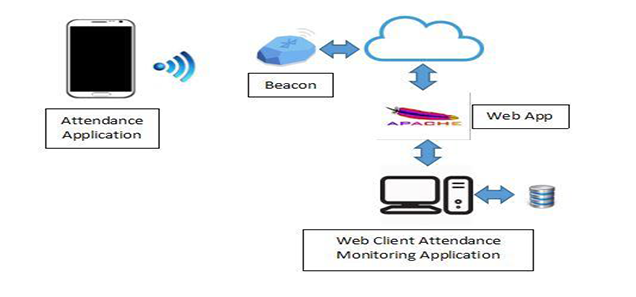

A secure Bluetooth-based attendance system designed to eliminate proxy attendance by verifying real physical presence using beacon proximity technology.
Traditional attendance systems rely on QR codes or GPS verification, both of which can be easily manipulated. BeaconTrack introduces a proximity-based approach where attendance is verified through Bluetooth beacon detection and secure server validation. Developed under BRIKIEN LABS, the system connects physical presence with digital identity to ensure reliable and fraud-resistant attendance recording.
| Traditional Attendance Systems | BeaconTrack |
|---|---|
| QR codes can be shared | No QR codes used |
| GPS spoofing possible | Proximity-based verification |
| Manual verification required | Automatic server validation |
| Proxy attendance possible | Device-bound authentication |
| Low reliability | High accuracy and security |
Faculty creates attendance sessions and broadcasts the session code through the beacon.
Student app detects beacon signal and submits session code for verification.
Unlike traditional digital attendance systems that rely on visual or location-based verification, BeaconTrack combines physical proximity verification with device identity binding and server-side validation. This creates a cyber-physical attendance system where attendance can only be marked when a registered device is physically present within the classroom environment.


Faculty starts attendance session
Beacon broadcasts session code
Student device detects beacon
Server verifies and marks attendance
Faculty monitors pending approvals
BeaconTrack extends beyond automated attendance marking by providing real-time attendance monitoring and comprehensive record management for both faculty and students. When a faculty member starts broadcasting an attendance session, student attendance requests are received instantly by the server and appear in a dynamic pending list within the faculty application. This allows faculty to monitor student participation in real time and approve attendance requests as they are received during the session.
The system also maintains detailed attendance logs for both modules. Faculty members can view all attendance sessions they have created along with complete records of students who attended each session, including timestamps and session details. Students, on the other hand, can access their personal attendance history, view the number of sessions attended and missed, and monitor their overall attendance percentage. This ensures transparency, accountability, and continuous tracking of attendance performance throughout the academic term.
Graph illustrating reduction in proxy attendance and time saved by faculty compared to traditional attendance methods.